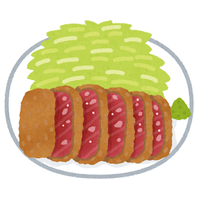
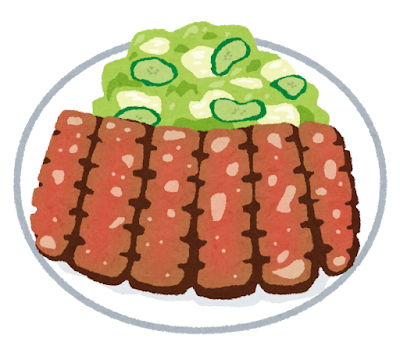
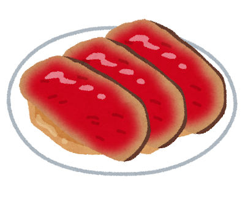

Steak and Beef: From Taboo to Obsession

A Forbidden Food
For over 1,200 years, from the 7th century to the Meiji Restoration in 1868, eating meat from four-legged animals was officially banned in Japan under Buddhist influence. The emperor issued edicts prohibiting the consumption of beef, horse, dog, monkey, and chicken (poultry restrictions were later relaxed). While the ban was not always strictly enforced — particularly among farmers and in certain regions — beef remained culturally taboo for most of Japanese history.
Everything changed when Emperor Meiji publicly ate beef in 1872 as part of Japan s modernization campaign. The message was clear: eating meat was part of building a strong, modern nation. Within a decade, beef restaurants sprang up across Tokyo, and gyunabe (beef hot pot, the precursor to sukiyaki) became wildly fashionable.
Japan s Beef Culture Today
Beefsteak (ビフテキ)
Japanese steak culture is its own world. Portions are smaller than Western steaks, sliced into bite-sized pieces and eaten with chopsticks. The emphasis is on the quality of the beef — especially wagyu (和牛) with its extraordinary marbling — rather than sheer size. A great steak in Japan is often cooked on a teppan (iron griddle) right in front of you, seasoned simply with salt, pepper, and perhaps a touch of wasabi or garlic.
Gyukatsu (牛カツ)
Deep-fried beef cutlet — the beef version of tonkatsu. The outside is golden and crunchy, but the inside is left rare to medium-rare, creating a stunning contrast. A relatively recent trend that has taken Tokyo by storm, with specialty shops drawing long queues. Served with cabbage, rice, and a choice of dipping sauces including rock salt, wasabi soy, and tonkatsu sauce.

Gyutan (牛タン)
Grilled beef tongue — a specialty of Sendai in Miyagi Prefecture. Sliced thick, seasoned with salt, and charcoal-grilled until crispy on the outside and tender within. Served with barley rice, pickled vegetables, and oxtail soup, it is a complete meal born from post-war resourcefulness when American troops left behind beef tongues that Japanese chefs transformed into a delicacy.

Roast Beef (ローストビーフ)
Japanese roast beef is sliced paper-thin and often served cold over rice as roast beef don, drizzled with gravy or wasabi soy sauce. The delicate slicing technique — a signature of Japanese knife culture — turns a Western staple into something more refined.

Japan s journey with beef — from absolute prohibition to producing the world s finest — is one of the most dramatic transformations in culinary history.